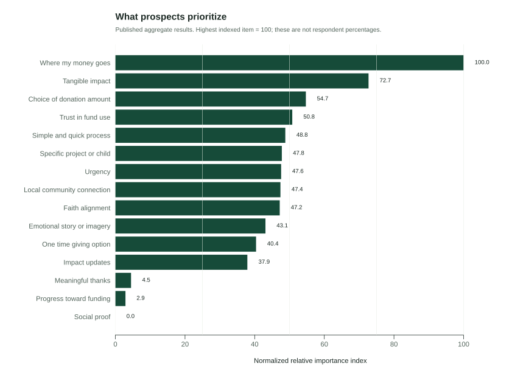
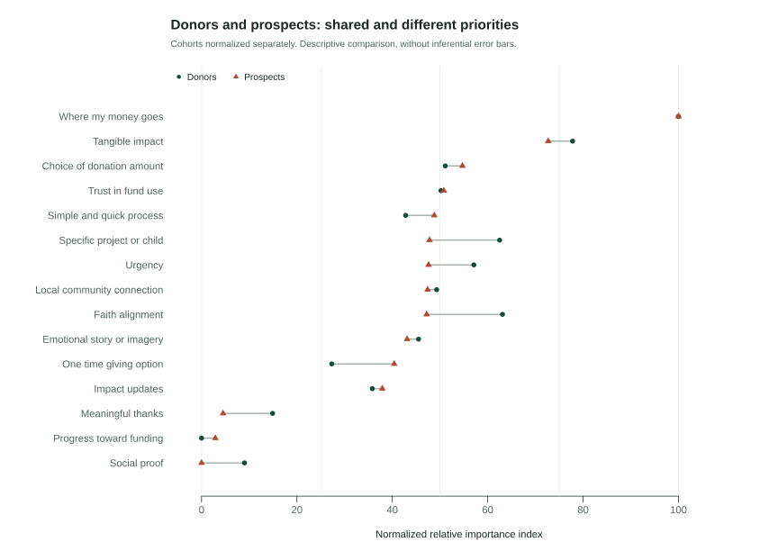
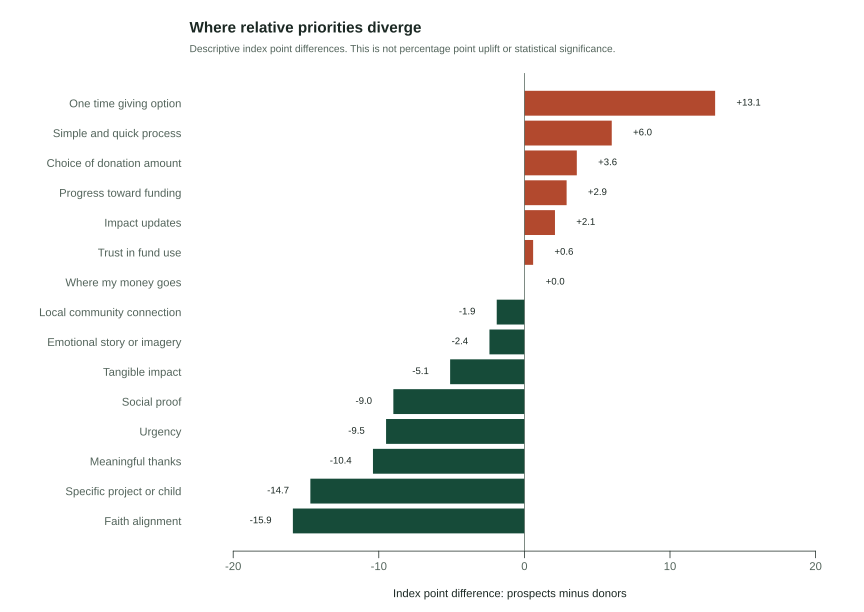

Research article
💟 Compassion Causes – Prospects Motivations (MaxDiff Study)
📓 Research Brief
Key Definitions
- 🆕 Prospect: A person who has never made a financial contribution to Compassion.
- 💲 Donor: A person who has made at least one financial contribution to Compassion.
- 💵 💲 Supporter: A general term that includes both prospects and donors.
- 🛒 Contribution: Any completed act of financial giving to a Cause.
- 🏦 Conversion: The transition from prospect to donor when an individual completes their first financial contribution.
- Engagement: Observable actions such as browsing, viewing, clicking, or interacting with Causes content.
Objective
This study aims to uncover what motivates first-time users, Prospects, that is, individuals new to Compassion International - to give through the Compassion Causes platform.
While the Donor Motivations study captured repeat givers, this phase isolates and analyzes Prospects-specific drivers to inform onboarding, messaging, and early engagement strategies.
🧪 Methodology
The study used MaxDiff (Best–Worst Scaling) to force trade-offs among 15 motivational statements. Respondents selected which factors most and least motivated them, allowing computation of relative and share-of-preference scores.
Importance was compared across segments (First-time, Repeat, CurrentGen, NextGen) using hierarchical Bayesian estimation with bootstrapped 95% confidence intervals.
📊 Key Findings
1. Prospects Are Pragmatic, Not Emotional, Clarity matters a lot 🔥
Prospects emphasize 🔥 clarity, control, and tangible proof over emotional or social cues.
Top three motivators:
- “I clearly understand where my money is going” 🔥
- “I can make a tangible impact through my donation”
- “I can choose how much I want to donate”
These accounted for over 60% of total preference share.
🔎 Prospects want transparency and autonomy before emotional storytelling resonates. (see the published results charts.
2. Trust and Simplicity Support the Decision Loop
Trust in Compassion and ease of the donation process ranked 4th and 5th, respectively (importance ≈ 50).
This mirrors donor behavior but with stronger reliance on perceived institutional credibility rather than urgency or peer influence.
🔎 Prospects appear to interpret trust as a prerequisite, not a differentiator.
see the published results charts
3. Emotional and Social Factors Are Secondary
Emotional storytelling, gratitude, and social proof show lowest motivational impact:
- “The story or images move me emotionally” (importance ≈ 43)
- “Compassion thanks me in a meaningful way” < 5
- "I see others supporting this cause” ≈ 0
🔎 Prospects are not yet relationally bonded to the organization; they seek rational validation first.
see the published results charts
4. Urgency Works Best When Anchored in Specificity
While urgency ranked mid-tier (importance ≈ 47.6), factors like
“I can see a specific project or child I am supporting” (47.8)
“Authentic connection to the local community” (47.4)
boosted conversion intent. This suggests specific, credible, and humanized calls to action outperform general urgency messages.
see the published results charts
5. First-Time Prospects vs. Repeat Comparison
For Prospects, top motivators are:
- Clear understanding of fund use
- Simple and quick process
- Visible, authentic local connection
🔎 Repeat givers rank faith alignment and impact tangibility higher—reflecting spiritual integration over rational assurance after trust is established.
(See see the published results charts: First-time vs. Repeat : Top 10 Motivators)
6. Generational Shifts in Motivational Structure
NextGen Prospects prioritize:
- Transparent tracking (“I know where my money is going”)
- Simplicity of experience
- Tangible impact metrics
🔎 CurrentGen Prospects retain higher motivation from Christian faith alignment and organizational trust (81–82 importance). This shows a cognitive-to-spiritual migration from NextGen to CurrentGen donors as relationships deepen.
see the published results charts
7. Top 10 Items Capture 90% of Total Motivation
As the cumulative capture curve shows, the first ten items explain nearly 90% of motivational variance, validating the concise focus of key message themes for Prospect conversion.
see the published results charts: Cumulative Capture of Importance)
🔍 Rank Summary by Segment
- Across segments, the clarity of fund flow consistently ranks #1.
- Tangible impact and control over giving amount hold the next positions.
- Urgency and faith alignment rise among Repeat donors, while emotional storytelling ranks low in all groups.
see the published results charts: Rank Heat Map Across Segments)
💡 Strategic Takeaways
1. For Product & Design
- Prioritize transparent visual cues (progress trackers, cost breakdowns).
- Offer personalized control levers (custom donation amounts, specific causes).
- Ensure frictionless donation flow with clear confirmation and receipts.
2. For Marketing & Content
- Lead with clarity and accountability before emotional appeal.
- Use cause-specific storytelling instead of general impact statements.
- “Your $50 provided clean water to 20 children”
- Frame trust as verification, not assumption
- “See exactly where your donation goes”
3. For Faith Integration
- Introduce faith-aligned messaging post-conversion.
- Prospects convert on clarity but stay for conviction; integrating faith narratives at the nurturing stage deepens loyalty.
MaxDiff Results Visualized
Generated in R from the published results table. Download the R plotting script · Download the published data. The original respondent level CSV is not included in this public archive, so these plots do not reproduce the full fitted model or its confidence intervals.






Appendix:
A1. Prospect Motivations in Context: Demographic & Persona Analysis 🧑🤝🧑
This appendix complements the Prospects Motivations Report by situating the MaxDiff results within the demographic and behavioral profiles of survey participants. It connects what motivates Prospects with who they are—their giving habits, donation patterns, and generational profiles.
1. Participant (Prospects) Overview
Giving History
- 94% (n=47) of participants had not yet donated to Compassion Causes.
- Only 6% (n=3) were prior donors (repeat or first-time).
→ This confirms that the MaxDiff responses reflect the mindset of potential or First-time Prospects, aligning precisely with this study’s focus.
👀 Interpretation:
These respondents represent the conversion frontier—people aware of Compassion but not yet emotionally invested. Their motivations (clarity, control, transparency) represent entry-level trust signals, not long-term loyalty traits.
Giving Identity
- 74% identify as individual donors rather than part of a church or group.
- 12% give through a church/community group, and 10% are students or early professionals exploring giving.
👀Interpretation
- Prospects in this cohort prefer personal autonomy in giving.
- This supports the top MaxDiff findings:
- “I can choose how much I want to donate.”
- “I clearly understand where my money is going.”
Messaging and product experiences should emphasize individual agency and self-directed impact, with optional but non-intrusive faith framing.
Typical Donation Amount
- 64% donate under $50,
- 30% give between $50–199,
- 6% give between $200–499,
- 0% give above $500.
👀Interpretation:
- Prospects are low-to-mid-tier contributors making _micro-decisions with high cognitive scrutiny._Their giving is aspirational yet cautious, valuing measurable ROI on compassion.
- Design implication: emphasize “Your $40 changes one child’s week” narratives over high-value collective goals.
Age Distribution
- 35–44 years: 32%
- 55+ years: 26%
- 45–54 years: 24%
- 25–34 years: 12%
- 18–24 years: 6%
👀 Interpretation:
This is a midlife-dominant audience, spanning both early-career and legacy-giver cohorts. Their motivational hierarchy blends NextGen rationalism with CurrentGen conviction:
- Younger Prospects (25–44) over-index on clarity, control, and simplicity.
- Older Prospects (45–65+) lean toward faith alignment and authentic storytelling once trust is established.
2. Connecting Demographics to Motivational Themes
| Demographic Segment | Key Motivation Themes | Strategic Implication |
|---|---|---|
| Non-donors (94%) | Need transparency, tangible proof, and control | Use interactive explainer tools (impact calculators, fund-tracking bars) |
| Individual givers (74%) | Autonomy and self-efficacy | Personalize cause recommendations rather than group campaigns |
| <$50 donors (64%) | Stewardship and financial prudence | Offer low-friction, recurring micro-giving options |
| 35–54 age group (56%) | Rational-spiritual balance | Combine practical transparency with subtle faith messaging |
| Younger Prospects (18–34) | Simplicity and directness | Minimize steps, highlight outcomes, use concise emotional hooks |
| Older Prospects (55+) | Faith, gratitude, and trust | Incorporate testimonials and follow-up stories about lasting impact |
3. Segment Synthesis
- The Prospects pool represents potential long-term donors at the pre-trust stage.
- Conversion will hinge on clarity of fund flow, low cognitive load in donation flows, and specific impact framing.
- Faith-based reinforcement is most effective after the first donation, not before.
4. Closing Note
In Compassion’s donor ecosystem, Prospects are not yet believers in the brand; they are believers in the idea of good stewardship.
Designing experiences that show with clarity stewardship before spirituality will help transition these Prospects into the donor archetype identified in this research report.
End of Document